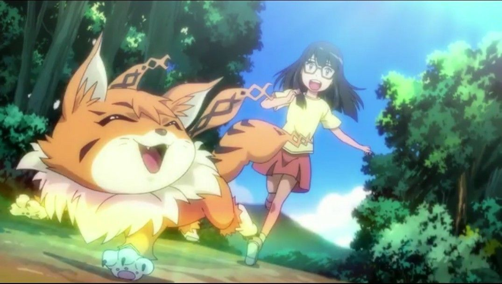

Disclaimer: This is a review of the 6-part feature film series "Digimon Adventure Tri," consisting of (in order) "Reunion," "Determination," "Confession," "Loss," "Coexistence," and "Future." This is based on the American home video release, and not the 26-episode television-sized version.In addition to the usual above dislclaimer that specifies exactly what this review covers, I should explain my personal bias towards the "Digimon" franchise, which has a big role towards my enjoyment of it. I'm a 90's kid, growing up on Saturday-morning cartoons from Nickelodeon, WB, and 4Kids. My exposure to Japanese anime came from these American television outlets, featuring shows aimed at my demographic (8-10 year-old boys), first with "Pokemon" and "DragonBall Z," followed by "Digimon," and later "Beyblade" and "Yu-Gi-Oh." Despite "Digimon" being considered a rip-off of "Pokemon" (they both have "mon" in the name, after all), I actually grew to prefer "Digimon," thanks to its cool digital-fantasy motiff, greater importance on individual monster characters and their personalities rather than their species, and a plot with direction (wherein eight chosen kids are tasked with saving the world) with interesting diversions. I had watched the whole first season on tv, as well as it's second season (with a new generation of kids), but fell off with the third season (it became a spin-off that didn't care about continuity with previous casts). Of course, I also saw the "The Digimon Movie" in theaters as a kid and loved it (of course, it was a terrible, highly-edited mashup of multiple other movies for the American audience, but give the kid-me a break). Even though popularity in the franchise kinda fell out when it didn't feature the original eight human characters, it still proved to have longevity and perseverance, with several spin-off seasons, films, and video games. The games in particular seemed to have a mini-renaissance in the late 2010's. Anyhow, to celebrate the 15th anniversary of the original series, Toei Animation announced they'd produce a film series, featuring the original eight DigiDestined. This "Digimon Adventure Tri" series would be released in America too, meaning we'd see a new story featuring Tai, Matt, Izzy, Sora and the rest, something I never thought I'd see, a new entry targeted at my generation. ... However, I haven't seen most of this stuff since it first aired, nearly 20 years ago now. It'd been a long time, and I've forgotten a bit. That's important, since "Tri" really does act like a direct sequel, or third season, to both Season 1 and 2 of the original TV show. Yes, both seasons, including the one featuring Davis as the hero lead. Also, the old American movie at minimum. These new movies don't do much to remind old fans of things, leaving me baffled as to whether the general public are supposed to know of the existance of Digimon (much of the plot is on the public's perception of them and whether the monsters should be feared), and surprised when certain cameos come into play (wait, the villain from Season 2 is the villain again here?!). And if you HAVEN'T already seen all that old content, these movies are an automatic no-go for you. Set years later, Tai and the gang are all teenagers, and have drifted apart a bit as their interests and lives take over, each missing old times and their Digi-friends that they hadn't seen since their past adventures. But then a large wild Digimon appears in the human world, wreaking havoc, and the eight kids need to do something... just in time, their Digimon partners teleport into the world to help out. This is one of the most powerful moments of the first movie: seeing Tai and Agumon (the recognizable poster-monster equivlent to Pikachu in that other series) meet again, with the original English dub actors noless, in a powerful and satisfying nostalgia bomb. Everyone is brought together by a secret government orgnaization that's monitoring the strange events, preparing for further possible attacks, all possibly revolving around a new ninth DigiDestined and her partner, a cat-like monster named Meicoomon. As the story progresses, we learn there's a virus causing mutations in the digital world, infecting some monsters and causing them to go berserk. But what's the cause? And what happens if the gang's own Digimon get infected too?It sounds like I'm giving a lot away, but his only covers the first two films, and enough stuff of importance occurs in each on to rewrite the stage for the next movie. I never quite knew what to expect from film to film. Even so, it's an understatement to say the movies drag on a bit; it makes a lot more sense as an episodic TV series, or else could have been condensed into a trilogy of films... or possibly even just one. There's a lot of uneven writing, editing and direction in these movies too. The first film, "Reunion," is a good example: Tai, normally the fearless, never-hesitating leader, has second thoughts about intervening in this new fight, after seeing the real-world destruction a monster battle can cause (this is effectively a one-on-one Godzilla-level Kaiju battle in the streets, after all). This is portrayed by him seeing flashbacks from early in the movie of a collapsed walkway and a broken cellphone... not once or twice, but several times. It's an awkward, boring, clumsy and incredibly repetitive way for explaining his fear that "people could die" from their actions (remaining family-friendly like the original series, even the mention of blood or death is avoided as much as possible until the final film). The content of the movies can be divided into three main parts: the actual plot, the character development of these teenagers, and the nostalgic comedy of the Digimon interacting with the cast. The plot itself, unfortunately, is convoluted and stupid. It tries too hard to seem deep and important, over-complicating things to the point where it's difficult to follow exactly what characters are trying to accomplish in a given moment. Lore and arbitrary terms and magic logic are thrown around all over the place. The ending isn't particularly satisfying in a way to justify sitting through the films either. Even the American version of the old "Digimon The Movie" had a better story than this, and that's embarrassing. On the other hand, the actual moment-to-moment drama and character development is fairly successful... somtimes. Seeing old protagonists in a new stage in life gives a lot of opportunity to revisit their personas and see how they've grown up, for better or for worse. Tai, and to a lesser extent Matt, get the worse of it though, effectively swapping their personalities ("don't think, act!" and "think things through first!"), and becoming defined by how often they still argue, rather than being individuals. The writing is sometimes clumsy for the others too, but at least they have more meat to chew on. Joe is a standout, for example, not wanting to join the rest of the group as he struggles to juggle his existing adult priorities (cram school and a new girlfriend, at risk of failing at both). It's a relatable part of growing up, to want to do many things but ultimately struggle to do any of them, and his emotions are well-conveyed. Mimi also has to deal with her pushy-personality in a new school, Izzy has become a workaholic pulling all-nighters to find out a solution that seemed to just come to him as a kid, and Sora isn't quite sure where she wants her future to go. The observations and statements they make are surprisingly deep, even compared to other anime that feature self-exploration as their genre. Their Digi-partners are great walls to bounce these feelings off of, and for the most part, just seeing them express their frustrations at themselves is satisfying.  Some of the drama comes from situations where the Digimon themselves are in danger. Here, it feels as though "Tri" takes cues from shocking anime from the past decade (believe it or not, "Madoka Magica" comes to mind). It's a little out of place in a movie series that remains family friendly, but it's effective, and I did tear up more than once. And of course, the Digimon themselves are as adorable as ever. Primarily just interested in eating and playing, they're like pets that can talk, and haven't changed a bit since 1999. The English script gives them a bunch of cute puns as they ask for food or ponder why humans are so complicated. Despite all the unnecessary padding the films have, I was happy to watch these simpler interactions, and disappointed when the plot had to move forward again. And old fans will be happy to know that all eight Digimon get a chance to shine, all appearing with Mega-evolutions this time around (I can only imagine the cheers in Japanese movie theaters when these occurred). Speaking of the English dub: yes, Shout Factory (the licensors for North America) went to the trouble to bring back the cast for the original show, a challenge even for the original Japanese cast. Other changes include using the old English-ized names in the dub, and using a new remix of the Digimon theme song. Sure, if you're a purist, the Japanese dubs are also on the discs, with subtitles that use the original names and the original "Butter-Fly" theme song (which does get used in all the films after the first one; the English alternative is only used once). But let's be honest, the only reason to watch these movies is for the nostalgia, probably meaning you saw the English dub on TV as a kid. You can argue sub versus dub for a lot of anime, but this one's a clear winner for the dub. However, not all the dub cast have returned. Joshua Seth as Tai and Tom Fahn as Agumon are back, which is the most important pair, as are the actors for Izzy, Sora and Mimi, and iconic-sounding voices for most of the Digimon, like Gabumon, Tentomon, and so on. T.K. and Kari are recast, which is a shame, but acceptable since the characters are much older than their toddler-level appearances from the first season. But most notably, Matt and Joe have been recast, Matt in particular sounding little like the original. Voiced by Vic Mignogna this time, Matt and his music-interests are better suited to him anyway, but it's distracting compared to the rest of the cast. The casting was a pleasent surprise, but also a controversey for not being complete, especially when the actors not returning suggested they simply weren't contacted. Shout Factory tried to avoid the issue, and we'll never know exactly what happened: maybe they tried to reach them through an outdated address and gave up, or had already begun recasting actors and signing contracts when they learned it was possible to bring back some actors after all. Whatever the case, the acting sounds mostly like I remember it, and the parts that don't, blend in well enough a couple movies in. Dialogue is sometimes a bit awkward though, due to the script (which sounds a lot like the old show, for better and for worse). I suspect there might be other minor greviances from die-hard fans about Shout Factory here, but they're largely minor (for example, the disc art for the third film not matching the others, or the films not being numbered, making it difficult to know what order to watch them in. Finally, the other disappointment to "Tri,": the production quality. Toei Animation might be a famous long-standing anime studio, but they specialize in kids-shows, at high volume and low quality. The animation is "Tri" is pretty poor, not at all passing for theatrical quality of anything, and barely on par with the original TV series from over a decade ago. There's simply not a lot of movement, a big use of still frames to cut costs, and the animation that isn't present doesn't look great. The exceptions are a handful of Digimon fight scenes. Most of those don't look good either, but the ones featuring Mega-evolutions, especially in the 5th and 6th movie, are fantastic by comparison, to the point that I'd swear a different studio stepped in. The movies avoid using CGI, but do use them in the newly-made, and frequently used, evolution sequences... but not consistently, using CGI for some monsters and 2D for others. The character designs are notably different and unique, from character designer Atsuya Uki this time (best known for "Cencoroll" and "Tsuritama"), and won't please everyone that remembers the old series. Personally, I liked the designs fine, but was disappointed that all the characters wear school uniforms instead of the bold fashions from the original show. I recall seeing some complaints about fanservice somewhere, but what little appears is very tame (the most exciting of it being some of the boys without shirts): this is very much a family-friendly film series, even though the parents will be confused for every minute of it... or maybe this time, the kids will be confused and the adults will have to explain the old adventures. So for me, "Digimon Adventure Tri" can be put of a surprisingly long list of anime that think they deserve a multi-film theatrical series, but really, really don't. The movies are way longer than they need to be, the story and writing is bad, and there's little genuine purpose for their existance. Despite it all... as an old fan, I did smile a lot to see the old characters again, a perfect example of the power of nostalgia, only really possible thanks to the English cast coming out of retirement to voice some of these characters again. And there are snippets of smart writing and animation in there, which could have made this worthwhile if it wasn't bogged down by the franchise's legacy and all. Those old feelings make my score a bit generous: if you have no ties to the old series, there's zero reason to see this one.
- "Ani" More reviews can be found at : https://2danicritic.github.io/ Previous review: review_Devilman_-_The_Birth,_Demon_Bird_Sirene Next review: review_Dog_and_Scissors